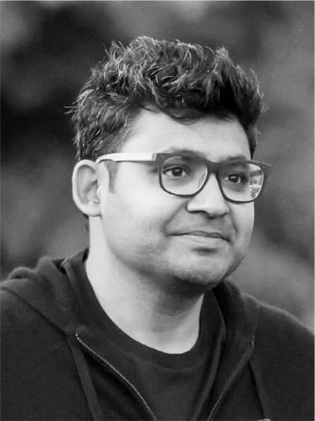
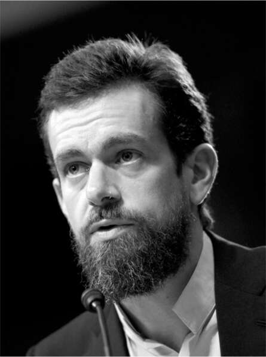

Trước cơn bão
Tháng 4 năm 2022, mọi việc diễn ra suôn sẻ một cách đáng ngạc nhiên đối với Musk. Doanh số bán hàng của Tesla đã tăng 71% trong mười hai tháng qua, mà không tốn một xu nào cho quảng cáo. Cổ phiếu của Tesla đã tăng gấp mười lăm lần trong năm năm, và hiện có giá trị hơn tổng giá trị của chín công ty ô tô đứng sau cộng lại. Việc Musk gây áp lực mạnh mẽ lên các nhà cung cấp vi mạch đồng nghĩa với việc Tesla, không giống như các nhà sản xuất khác, đã vượt qua được sự gián đoạn chuỗi cung ứng do đại dịch gây ra, cho phép công ty đạt được doanh số giao hàng kỷ lục trong quý đầu tiên của năm 2022.
Về SpaceX, trong quý đầu tiên của năm 2022, công ty đã phóng khối lượng hàng hóa lên quỹ đạo gấp đôi so với tất cả các công ty và quốc gia khác cộng lại. Tháng 4, SpaceX đã thực hiện sứ mệnh có người lái thứ tư lên Trạm Vũ trụ Quốc tế, chở ba phi hành gia cho NASA (vẫn chưa có khả năng phóng riêng) và một phi hành gia cho Cơ quan Vũ trụ Châu Âu. Cũng trong tháng đó, SpaceX đã đưa lên quỹ đạo một loạt vệ tinh liên lạc Starlink khác, nâng tổng số vệ tinh trong chòm sao SpaceX lên 2.100, cung cấp kết nối internet cho 500.000 thuê bao tại 40 quốc gia, bao gồm cả Ukraine. Không một công ty hay quốc gia nào khác có thể hạ cánh tên lửa quỹ đạo an toàn và tái sử dụng chúng. "Điều kỳ lạ là Falcon 9 vẫn là tên lửa đẩy quỹ đạo duy nhất hạ cánh hoặc tái bay sau ngần ấy năm!" Musk đã tweet.
Kết quả là giá trị của bốn công ty mà ban đầu anh đã tài trợ và xây dựng là:
- Tesla: 1 nghìn tỷ đô la
- SpaceX: 100 tỷ đô la
- The Boring Company: 5,6 tỷ đô la
- Neuralink: 1 tỷ đô la
Đó hứa hẹn sẽ là một năm huy hoàng, nếu anh ấy biết đủ là đủ. Nhưng bản tính của Musk không cho phép anh bằng lòng với hiện tại.
Shivon Zilis nhận thấy rằng vào đầu tháng 4, anh có sự bồn chồn của một người nghiện trò chơi điện tử đã chiến thắng nhưng không thể ngừng chơi. "Anh không cần phải ở trong trạng thái chiến tranh mọi lúc," cô nói với anh trong tháng đó. "Hay là anh cảm thấy thoải mái hơn khi ở trong thời kỳ chiến tranh?"
"Đó là một phần trong cài đặt mặc định của tôi," anh trả lời.
"Giống như anh ấy đã chiến thắng trò chơi mô phỏng và giờ cảm thấy mất phương hướng không biết phải làm gì," cô nói. "Những khoảng thời gian yên bình kéo dài khiến anh ấy bồn chồn."
Trong cuộc trò chuyện tháng đó về những cột mốc mà các công ty của mình đã đạt được, ông giải thích với tôi tại sao ông nghĩ Tesla đang trên đà trở thành công ty giá trị nhất thế giới, một công ty kiếm được 1 nghìn tỷ đô la lợi nhuận mỗi năm. Tuy nhiên, giọng nói của ông không hề có chút nào của sự ăn mừng hay thậm chí là hài lòng. "Tôi đoán tôi luôn muốn đặt cược lại tất cả hoặc chơi ở cấp độ tiếp theo của trò chơi", ông nói. "Tôi không giỏi ngồi yên một chỗ."
Thông thường, vào những thời điểm thành công đến mức đáng lo ngại như vậy, Musk lại tạo ra một màn kịch. Ông khởi động một đợt bùng nổ, điều động các máy bay phản lực, công bố một thời hạn phi thực tế và không cần thiết. Ngày Tự động hóa, lắp ráp Starship, lắp đặt mái năng lượng mặt trời, địa ngục sản xuất ô tô — ông giật chuông báo cháy và buộc phải diễn tập chữa cháy. Kimbal nói: "Thông thường, anh ấy sẽ đến một trong những công ty của mình và tìm thứ gì đó để biến thành khủng hoảng". Nhưng lần này, Musk đã không làm vậy. Thay vào đó, mà không suy nghĩ thấu đáo, ông quyết định mua Twitter.
Ngọn lửa cho ngón tay cái
Khoảng thời gian bình lặng đến đáng sợ của Musk vào đầu năm 2022 trùng hợp, một cách định mệnh, với thời điểm ông đột nhiên có rất nhiều tiền mặt trong túi. Việc bán cổ phiếu đã mang lại cho ông khoảng 10 tỷ đô la. "Tôi không muốn cứ để nó trong ngân hàng", ông nói, "vì vậy tôi tự hỏi mình thích sản phẩm nào, và đó là một câu hỏi dễ dàng. Đó là Twitter." Vào tháng 1, ông đã bí mật nói với người quản lý cá nhân Jared Birchall của mình bắt đầu mua cổ phiếu.
Twitter là một sân chơi lý tưởng — gần như quá lý tưởng — cho Musk. Nó tưởng thưởng cho những người chơi bốc đồng, thiếu tôn trọng và không kiêng dè, giống như một ngọn lửa cho ngón tay cái. Nó có nhiều đặc điểm của một sân trường, bao gồm cả việc chế nhạo và bắt nạt. Nhưng trong trường hợp của Twitter, những đứa trẻ thông minh sẽ có được người theo dõi chứ không bị đẩy xuống bậc thang bê tông. Và nếu bạn là người giàu nhất và thông minh nhất, bạn thậm chí có thể quyết định, không giống như khi còn nhỏ, trở thành vua của sân trường.
Musk lần đầu tiên sử dụng Twitter ngay sau khi nó được ra mắt vào năm 2006, nhưng đã bỏ tài khoản của mình sau khi "chán những tweet về loại latte mà ai đó đã uống ở Starbucks." Người bạn Bill Lee của ông đã thúc giục ông tham gia lại để ông có thể có một phương pháp giao tiếp không bị kiểm duyệt với công chúng, và ông đã mở lại vòi vào tháng 12 năm 2011. Những tweet ban đầu của ông bao gồm một bức ảnh ông tại một bữa tiệc Giáng sinh đội tóc giả kinh dị và giả vờ là Art Garfunkel và một bức ảnh khác đã trở thành khởi đầu của một tình bạn căng thẳng. "Hôm nay tôi nhận được cuộc gọi ngẫu nhiên từ Kanye West và nhận được hàng loạt suy nghĩ của anh ấy, từ giày dép đến Moses", Musk viết. "Anh ấy lịch sự, nhưng khó hiểu."
Trong thập kỷ tiếp theo, Musk đã soạn mười chín nghìn tweet. "Những tweet của tôi đôi khi giống như Thác Niagara và chúng đến quá nhanh", ông nói. "Chỉ cần nhúng một cái cốc vào đó và cố gắng tránh những thứ bẩn thỉu ngẫu nhiên." Các tweet "pedo guy" và "funding secured" năm 2018 của ông cho thấy Twitter có thể nguy hiểm trong những ngón tay bồn chồn của ông, đặc biệt là vào những đêm khuya bị kích động bởi Red Bull và Ambien. Khi được hỏi tại sao ông không kiềm chế bản thân, ông vui vẻ thừa nhận rằng ông quá thường xuyên "tự bắn vào chân mình" hoặc "tự đào mồ chôn mình". Nhưng cuộc sống cần phải thú vị và táo bạo, ông nói, sau đó trích dẫn câu thoại yêu thích của mình từ bộ phim Gladiator năm 2000: "Các ngươi không thấy thích thú sao? Đó chẳng phải là lý do các ngươi ở đây sao?"
Đầu năm 2022, một yếu tố mới đã được thêm vào tình hình vốn đã căng thẳng: mối lo ngại ngày càng tăng của Musk về sự nguy hiểm của "virus tư tưởng thức tỉnh" mà ông tin rằng đang lây nhiễm nước Mỹ. Ông không ưa Donald Trump, nhưng ông cảm thấy việc cấm vĩnh viễn một cựu tổng thống là vô lý, và ông ngày càng tức giận trước những lời phàn nàn từ những người thuộc phe cánh hữu bị kiểm duyệt trên Twitter. "Ông ấy thấy hướng đi của Twitter, đó là nếu bạn đứng về phía sai, bạn sẽ bị kiểm duyệt", Birchall nói.
Những người bạn theo chủ nghĩa tự do công nghệ của ông đã cổ vũ ông. Khi Musk đề xuất vào tháng 3 rằng Twitter nên công khai các thuật toán mà nó sử dụng để tăng hoặc giảm nội dung, người bạn trẻ Joe Lonsdale của ông đã bày tỏ sự ủng hộ. "Không gian công cộng của chúng ta không nên có sự kiểm duyệt tùy tiện, mờ ám", anh nhắn tin. "Tôi sẽ phát biểu trước hơn 100 thành viên Quốc hội vào ngày mai tại cuộc họp chính sách của Đảng Cộng hòa và đây là một trong những ý tưởng tôi đang thúc đẩy."
"Chắc chắn rồi", Musk trả lời. "Những gì chúng ta đang có bây giờ là tham nhũng ngầm!"
Người bạn ở Austin của họ, Joe Rogan, cũng tham gia. "Anh có định giải phóng Twitter khỏi đám đông thích kiểm duyệt không?", anh nhắn tin cho Musk.
"Tôi sẽ đưa ra lời khuyên, mà họ có thể chọn làm theo hoặc không", Musk trả lời.
Quan điểm của ông về tự do ngôn luận là càng có nhiều tự do ngôn luận thì càng tốt cho nền dân chủ. Vào một thời điểm trong tháng 3, ông đã thực hiện một cuộc thăm dò trên Twitter: "Tự do ngôn luận là điều cần thiết cho một nền dân chủ hoạt động. Bạn có tin rằng Twitter tuân thủ nghiêm ngặt nguyên tắc này không?" Khi hơn 70% trả lời không, Musk đặt ra một câu hỏi khác: "Có cần một nền tảng mới không?"
Nhà đồng sáng lập Twitter, Jack Dorsey, khi đó vẫn còn trong ban quản trị của công ty, đã nhắn tin riêng cho Musk câu trả lời: "Có."
Musk trả lời: "Tôi muốn giúp đỡ nếu có thể."
Ghế trong ban quản trị
Vào thời điểm đó, Musk đang cân nhắc việc có nên bắt đầu một nền tảng mới hay không. Nhưng vào cuối tháng 3, ông đã có một số cuộc trò chuyện riêng với một vài thành viên ban quản trị của Twitter, những người đã thúc giục ông tham gia nhiều hơn vào công ty. Một đêm, ngay sau khi kết thúc cuộc họp lúc 9 giờ với nhóm Tesla Autopilot, ông đã gọi cho Parag Agrawal, kỹ sư phần mềm đã tiếp quản vị trí Giám đốc điều hành Twitter từ Dorsey. Hai người quyết định gặp nhau bí mật để ăn tối vào ngày 31 tháng 3, cùng với chủ tịch hội đồng quản trị của Twitter, Bret Taylor.
Nhân viên Twitter đã sắp xếp cho họ sử dụng một trang trại Airbnb gần sân bay San Jose. Khi Taylor đến trước, anh nhắn tin cho Musk để cảnh báo. "Đây là nơi kỳ lạ nhất mà tôi từng họp gần đây", anh viết. "Có máy kéo và lừa."
Musk trả lời: "Có lẽ thuật toán của Airbnb nghĩ rằng bạn thích máy kéo và lừa (ai mà không thích chứ)."
Tại cuộc họp, Musk thấy Agrawal rất dễ mến. "Anh ấy là một người rất tốt", ông nói. Nhưng đó lại là vấn đề. Nếu bạn hỏi Musk những đặc điểm cần có ở một CEO là gì, ông sẽ không bao gồm "là một người tốt". Một trong những châm ngôn của ông là các nhà quản lý không nên nhắm đến việc được yêu thích. "Những gì Twitter cần là một con rồng phun lửa", ông nói sau cuộc họp đó, "và Parag không phải là người như vậy."
Rồng phun lửa. Đó là một mô tả ngắn gọn về Musk. Nhưng ông vẫn chưa nghĩ đến việc tự mình tiếp quản Twitter. Tại cuộc họp của họ, Agrawal nói với ông rằng Dorsey đã đề xuất một thời gian trước đó rằng Musk nên tham gia hội đồng quản trị. Agrawal thúc giục ông làm như vậy.
Hai ngày sau, khi đang ở Đức, Musk nhận được lời đề nghị chính thức vào hội đồng quản trị Twitter. Nhưng trái với mong đợi của ông, đó không phải là một thỏa thuận thân thiện. Nó dựa trên điều khoản Twitter từng dùng hai năm trước, khi đồng ý để hai nhà đầu tư đối lập vào hội đồng quản trị. Bản thỏa thuận dài bảy trang, bao gồm các điều khoản ngăn ông đưa ra tuyên bố công khai (và có lẽ cả tweet) chỉ trích công ty. Về phía hội đồng quản trị Twitter, điều đó cũng dễ hiểu. Lịch sử đã cho thấy, và cả tương lai nữa, những thiệt hại Musk có thể gây ra nếu không bị kiềm chế. Cuộc chiến của ông với SEC cũng cho thấy việc áp đặt những hạn chế như vậy lên ông khó khăn như thế nào.
Musk nói với Birchall từ chối thỏa thuận. Ông cho rằng thật “trớ trêu” khi một công ty được coi là “quảng trường công cộng” lại cố gắng hạn chế quyền tự do ngôn luận của mình. Chỉ vài giờ sau, hội đồng quản trị Twitter đã nhượng bộ. Họ gửi lại một bản thỏa thuận sửa đổi rất thân thiện, chỉ dài ba đoạn. Hạn chế duy nhất là ông không thể mua quá 14,9% cổ phần của Twitter. "Vậy nếu họ trải thảm đỏ, tôi sẽ nhận lời", ông nói với Birchall.
Sau khi Musk chậm trễ công bố với SEC rằng ông sở hữu khoảng 9% cổ phần của Twitter, ông và Agrawal đã trao đổi những tweet chúc mừng. "Tôi rất vui mừng được chia sẻ rằng chúng tôi đang bổ nhiệm @elonmusk vào hội đồng quản trị của chúng tôi!" Agrawal đăng vào sáng sớm ngày 5 tháng 4. "Ông ấy vừa là người ủng hộ nhiệt thành vừa là người phê bình thẳng thắn dịch vụ này, đó chính xác là những gì chúng tôi cần."
Bảy phút sau, Musk trả lời bằng một tweet đã được soạn thảo cẩn thận. "Rất mong được hợp tác với Parag & hội đồng quản trị Twitter để cải thiện đáng kể Twitter trong những tháng tới!"
Trong vài ngày ngắn ngủi, dường như thung lũng sẽ có hòa bình. Musk thích việc Agrawal là một kỹ sư, chứ không phải một CEO điển hình. "Tôi giao tiếp tốt hơn với các kỹ sư có khả năng lập trình chuyên sâu hơn là với những người kiểu quản lý chương trình/MBA", ông nhắn tin. "Tôi thích những cuộc trò chuyện của chúng ta!"
"Trong cuộc trò chuyện tiếp theo, hãy coi tôi như một kỹ sư thay vì CEO và chúng ta hãy xem chúng ta sẽ đi đến đâu", Agrawal trả lời.
Động não
Luke Nosek và Ken Howery, bạn thân và đồng sáng lập PayPal của Musk, đi đi lại lại trên tầng lửng của Giga Texas vào chiều ngày 6 tháng 4, chờ ông kết thúc cuộc thảo luận về từ thiện với Birchall và sau đó là cuộc gọi với các quan chức chính quyền Biden về thuế quan của Trung Quốc. Ông đã sống tại nhà của Howery và đôi khi cũng ở nhà của Nosek. "Hai chủ nhà của tôi!" ông tuyên bố khi cuối cùng cũng rảnh rang và đi tới.
Đó là ngày sau khi thông báo rằng ông sẽ tham gia hội đồng quản trị Twitter, và Nosek cùng Howery tỏ ra nghi ngờ về quyết định này. "Đó có lẽ là một công thức cho rắc rối", Musk vui vẻ thừa nhận khi ngồi xuống bàn hội nghị nhìn ra dây chuyền lắp ráp của Tesla. "Tôi có một khoản tiền mặt nhàn rỗi!" Howery và Nosek cười khúc khích, rồi chờ đợi thêm. "Tôi nghĩ điều quan trọng là phải có một diễn đàn đáng tin cậy, hoặc ít nhất là không quá đáng ngờ", Musk nói thêm. Ông phàn nàn rằng hội đồng quản trị Twitter đầu tư rất ít vào dịch vụ, cả về tư cách cổ đông lẫn người dùng. "Parag là một chuyên gia công nghệ và có hiểu biết kha khá về những gì đang diễn ra, nhưng rõ ràng là những người không đủ năng lực đang điều hành nơi này."
Ông nhắc lại quan điểm đơn giản của mình rằng sẽ tốt cho nền dân chủ nếu Twitter ngừng hạn chế người dùng phát ngôn. "Twitter cần hướng tới tự do ngôn luận hơn, ít nhất là theo quy định của pháp luật", ông nói. "Hiện tại, việc Twitter kiểm soát ngôn luận đã vượt quá giới hạn pháp luật."
Mặc dù đồng tình với quan điểm tự do ngôn luận của Musk, Howery vẫn nhẹ nhàng phản biện bằng những câu hỏi khéo léo. "Liệu nó có nên giống như hệ thống điện thoại, đầu vào thế nào đầu ra thế ấy?", ông hỏi. "Hay anh nghĩ nó giống một hệ thống quản lý diễn ngôn toàn cầu, và có lẽ thuật toán nên được thiết kế thông minh hơn để ưu tiên và hạ thấp các nội dung?"
"Đúng, đó là một câu hỏi hóc búa", Musk đáp. "Người ta có quyền phát ngôn, nhưng vấn đề là mức độ nội dung đó được quảng bá, hạ thấp hay lan truyền." Có lẽ công thức quảng bá bài đăng nên minh bạch hơn. "Nó có thể là một thuật toán mã nguồn mở trên GitHub để mọi người cùng xem xét." Ý tưởng này hấp dẫn những người theo chủ nghĩa bảo thủ, những người cho rằng thuật toán hiện tại đang âm thầm thiên vị phe tự do, nhưng nó không thực sự giải quyết vấn đề liệu Twitter có nên ngăn chặn sự lan truyền của nội dung nguy hiểm, sai lệch hoặc gây hại hay không.
Musk sau đó đưa ra một vài ý tưởng khác. "Nếu chúng ta tính phí người dùng một khoản nhỏ, chẳng hạn như hai đô la một tháng, để được xác minh thì sao?", ông hỏi. Đây sẽ trở thành một trong những ý tưởng cốt lõi của Musk cho Twitter: yêu cầu người dùng đăng ký bằng thẻ tín dụng và số điện thoại di động sẽ là cách để xác minh danh tính của họ. Thuật toán có thể ưu tiên những người dùng này, những người ít có khả năng tham gia vào các hoạt động lừa đảo, bắt nạt và lan truyền thông tin sai lệch. Điều này có thể làm giảm tốc độ biến tướng của các cuộc thảo luận thành những màn công kích cá nhân.
Việc lấy thông tin thẻ tín dụng của người dùng, theo ông, sẽ có thêm một lợi ích nữa: nó có thể tạo điều kiện biến Twitter thành một nền tảng thanh toán nơi mọi người có thể gửi tiền, tặng tiền boa và trả tiền cho các bài viết, âm nhạc và video. Vì Howery và Nosek đã từng làm việc với Musk tại PayPal, họ thích ý tưởng này. "Nó có thể hoàn thành tầm nhìn ban đầu của tôi cho X.com và PayPal", Musk nói với một tiếng cười vui vẻ. Ngay từ đầu, ông đã nhìn thấy tiềm năng Twitter có thể trở thành những gì ông đã hình dung cho X.com, một mạng xã hội hỗ trợ giao dịch tài chính.
Cuộc trò chuyện tiếp tục trong bữa tối muộn tại Pershing, một câu lạc bộ sang trọng nhưng không phô trương ở Austin, nơi Nosek đã đặt một phòng ở tầng trên. Cùng tham gia còn có Griffin và Saxon; Chris Anderson của TED, người đang ở trong thành phố để ghi hình một cuộc phỏng vấn cho hội nghị sắp tới của mình; Maye, người vừa đến từ Prague, nơi bà đang xuất hiện cho Vogue; và sau đó là Grimes.
Griffin và Saxon thừa nhận rằng họ hiếm khi sử dụng Twitter, nhưng Maye cho biết bà thường xuyên sử dụng, điều này có lẽ là một dấu hiệu cảnh báo về nhân khẩu học của người dùng dịch vụ. "Tôi có lẽ dành quá nhiều thời gian cho Twitter", Elon nói. "Đó là một nơi tốt để tự đào mồ chôn mình. Bạn đặt vai vào đó, và cứ tiếp tục đào."
Giga Rodeo
Lễ khai trương nhà máy Giga Texas được ấn định vào tối hôm sau, ngày 7 tháng 4. Omead Afshar đã lên kế hoạch cho sự kiện mà ông gọi là Giga Rodeo, với mười lăm nghìn khách mời. Thay vì giám sát công tác chuẩn bị và tập dượt cho buổi biểu diễn, Musk lại bay đến Colorado Springs trong chuyến thăm ba giờ tới Học viện Không quân Hoa Kỳ, nơi ông đã đồng ý thuyết trình. Đó là một khoảng thời gian nghỉ ngơi đáng hoan nghênh. Ông có thể suy nghĩ về Twitter trong khi tham gia vào một việc khác.
Ông khuyến khích các học viên đừng rơi vào lối tư duy quan liêu thận trọng mà ông tin rằng đã cản trở các chương trình của chính phủ. "Nếu chúng ta không làm nổ tung động cơ, tức là chúng ta chưa cố gắng đủ", ông nói với họ. Ông có vẻ không vội vàng, bất chấp tất cả những gì đang diễn ra. Sau buổi nói chuyện, ông đã gặp gỡ một nhóm nhỏ sinh viên để thảo luận về nghiên cứu của họ về trí tuệ nhân tạo và sự phát triển của máy bay không người lái tự động.
Khi ông trở lại vào chiều muộn, Giga Texas đã được biến đổi. Khu vực đậu xe được trang hoàng bằng các tác phẩm nghệ thuật sắp đặt giống như ở Burning Man, trò chơi điện tử, khán đài ban nhạc, một con bò cơ khí, một con vịt cao su khổng lồ và hai cuộn dây Tesla cao chót vót. Bên trong, các khu vực của nhà máy được dàn dựng trông giống như một câu lạc bộ đêm. Kimbal đã giúp tổ chức một buổi trình diễn máy bay không người lái với hình ảnh của Nikola Tesla, linh vật chú chó Dogecoin và một chiếc Cybertruck trên bầu trời đêm. Những người nổi tiếng tham dự bao gồm Harrison Ford, Spike Lee và nghệ sĩ Beeple, người đã tạo ra một tác phẩm sắp đặt.
Musk bước lên sân khấu với tiếng nhạc Dr. Dre vang dội, lái chiếc Tesla Roadster màu đen, chiếc xe đầu tiên mà công ty từng sản xuất. Ông đã đưa ra nhiều số liệu thống kê về quy mô khổng lồ của nhà máy 10 triệu foot vuông, sau đó ông đặt nó trong bối cảnh bằng cách nói rằng nó có thể chứa 194 tỷ con chuột hamster. Sau khi liệt kê nhiều cột mốc mà Tesla đã đạt được, ông nhấn mạnh điều mà ông nói sẽ là cột mốc cuối cùng. "Lái xe tự động hoàn toàn", ông hứa, "sẽ cách mạng hóa thế giới".
Lễ khai trương Giga Texas lẽ ra phải là một khoảnh khắc chiến thắng. Musk đã dẫn đầu kỷ nguyên của xe điện, và giờ đây ông đang cho thấy rằng ngành sản xuất có thể phát triển mạnh ở Mỹ. Nhưng chủ đề bàn tán tại lễ khai trương và bữa tiệc sau đó không phải là về những điều kỳ diệu của ngành sản xuất. Đặc biệt là giữa những người bạn thân và gia đình của Musk — Kimbal, Antonio, Luke và cả Maye — cuộc trò chuyện lại xoay quanh Twitter. Tại sao ông lại lao mình vào vũng lầy đầy rắn rết đó? Liệu đây có phải là Chiến dịch Hoang dã của ông ấy? Chúng ta có nên cố gắng khuyên can ông ấy không?

Parag Agrawal

Jack Dorsey